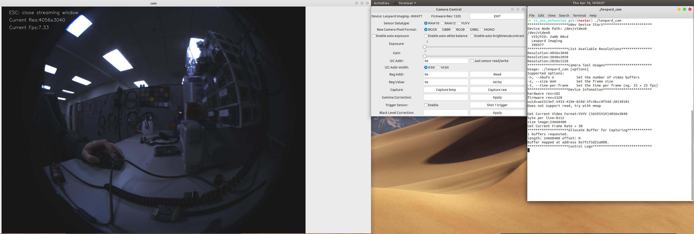
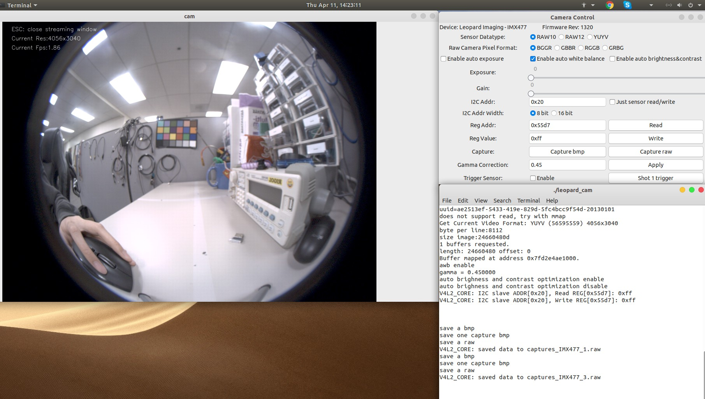
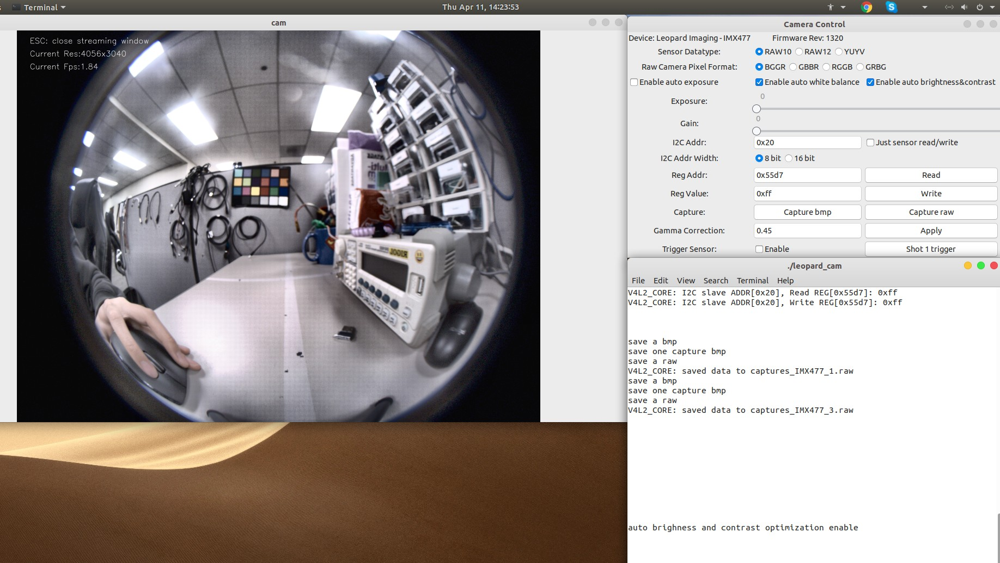
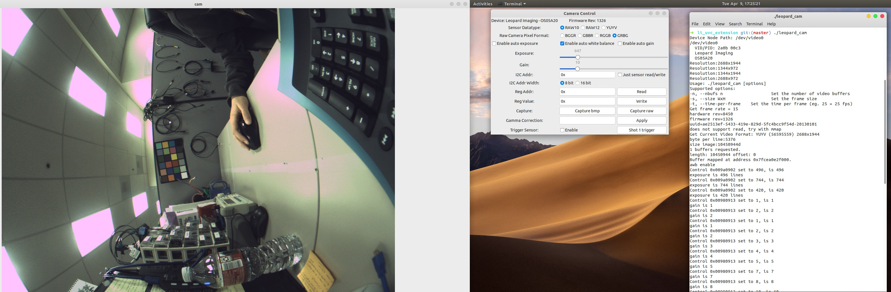
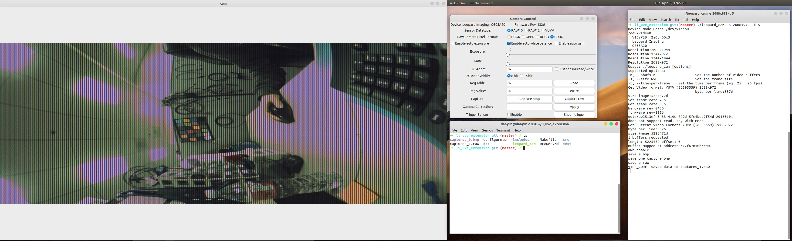
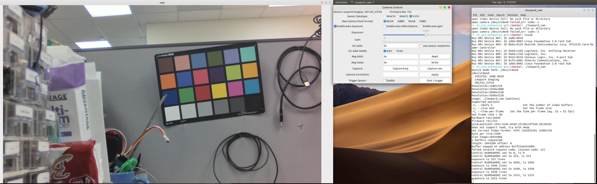
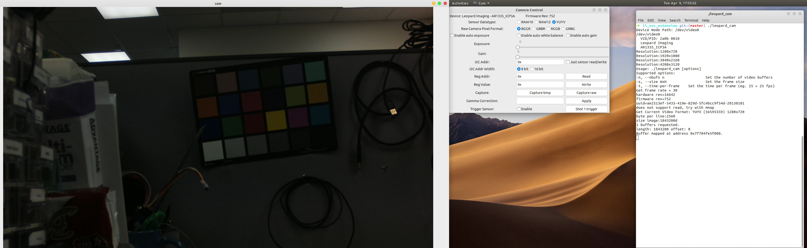

This is the sample code for Leopard USB3.0 camera linux camera tool. It is a simple interface for capturing, viewing, controlling video from v4l2 devices, with a special emphasis for the linux uvc driver.
$ linux_camera_tool .
├── Makefile
├── configure.sh
├── CMakeLists.txt
│
├── README.md
├── CHANGELOG.md
├── LICENSE.md
├── AUTHOR.md
│
├── includes
│ ├── shortcuts.h # common header
│ ├── cam_property.h
│ ├── extend_cam_ctrl.h
| ├── json_parser.h
│ ├── ui_control.h
│ ├── uvc_extension_unit_ctrl.h
│ └── v4l2_devices.h
│
├── src
│ ├── cam_property.cpp # gain, exposure, ptz ctrl
│ ├── extend_cam_ctrl.cpp # camera stream. capture ctrl
| ├── json_parser.cpp
| ├── ui_control.cpp # control GUI
│ ├── uvc_extension_unit_ctrl.cpp # all uvc extension unit ctrl
│ └── v4l2_device.cpp # udev ctrl
│
└── test
└── main.c
Make sure the libraries have installed. Run configure.sh for completing installing all the required dependencies
chmod +X configure.sh
./configure.sh
Make sure you have GTK 3 and OpenCV (3 at least) installed. The way you do to install this package varies by operational system.
Gtk3 and Gtk2 don't live together peaceful. If you try to run camera tool and got this error message:
Gtk-ERROR **: GTK+ 2.x symbols detected. Using GTK+ 2.x and GTK+ 3 in the same proc
It is mostly you have OpenCV build with GTk2 support. The only way to fix it is rebuild OpenCV without GTk2:
opencv_dir/release$cmake [other options] -D WITH_GTK_2_X=OFF ..
in order to disable Gtk2 from OpenCV.
#rebuild opencv, this might take a while rm -rf build/ mkdir build && cd build/ cmake -D CMAKE_BUILD_TYPE=RELEASE -D CMAKE_INSTALL_PREFIX=/usr/local -D WITH_TBB=ON -D BUILD_NEW_PYTHON_EXAMPLES=ON -D BUILD_EXAMPLES=ON -D WITH_QT=ON -D WITH_OPENGL=ON -D WITH_GTK=ON -D WITH_GTK3=ON -D WITH_GTK_2_X=OFF .. make -j6 #do a $lscpu to see how many cores for CPU sudo make install -j6 # link opencv sudo sh -c 'echo "/usr/local/lib" >> /etc/ld.so.conf.d/opencv.conf' sudo ldconfig
make
mkdir build cd build cmake ../ make # Add to your project add_subdirectory(linux_camera_tool) include_directories( linux_camera_tool/src/ ) ... target_link_libraries(<Your Target> leopard_tools )
./leopard_cam
Auto white balance, gamma correction and auto brightness and contrast are done by mainly using opencv, since histogram matrix calculations are involved, enabling these features will slow down the streaming a lot.
Auto exposure is usually implemented on sensor/isp, which when enabled, won't further slow down the streaming, need to check with camera driver for auto exposure support.
Original streaming for IMX477:
image is dark and blue

Modified streaming for IMX477:
enabled software AWB, gamma correction
read & write register from IMX477

enable software auto brightness and contrast

Modified streaming for OS05A20 full resolution
change bayer pattern to GRBG
enable software AWB, gamma correction
increase exposure, gain

Modified OS05A20 resolution to an available one
binning mode
capture raw and bmp, save them in the camera tool directory

Original streaming for AR1335 ICP3 YUV cam:
Default ae enabled -> change exposure&gain takes no effects

Disable ae:
Being able to change exposure & gain taking effective

If you forget to exit both windows and tried to run the camera tool again, it will give you the error of
VIDIOC_DQBUF: Invalid argument
Please check your available processes and kill leopard_cam, then restart the camera tool application
ps killall -9 leopard_cam
When changing exposure and gain under linux, camera tool will experience split screen issue at the moment change is happened. This issue happens for the USB3 camera that use manual DMA in the FX3 driver. For the camera that utilizes auto DMA, the image will be ok when exposure and gain change happens.
For updating driver from manual DMA to auto DMA, you need to ensure:
When use triggering mode instead of master free running mode for USB3 SerDes camera, the very first frame received will be bad and should be tossed away. It is recommended to use an external function generator or a dedicated triggering signal for triggering the cameras for the purpose of syncing different SerDes cameras.
The included "shot 1 trigger" function is only a demonstration on generating one pulse and let camera output one frame after "shot 1 trigger" is clicked once. User should not fully rely on this software generated trigger but use a hardware trigger for sync the camera streaming.